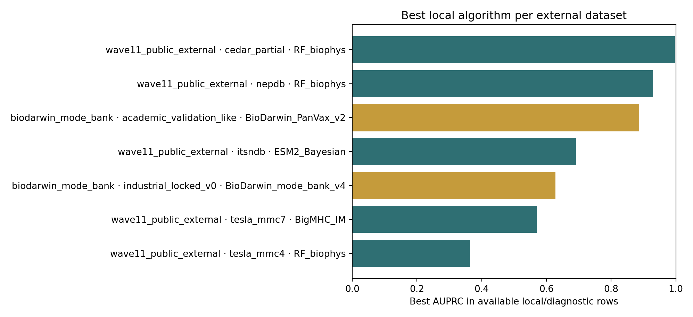
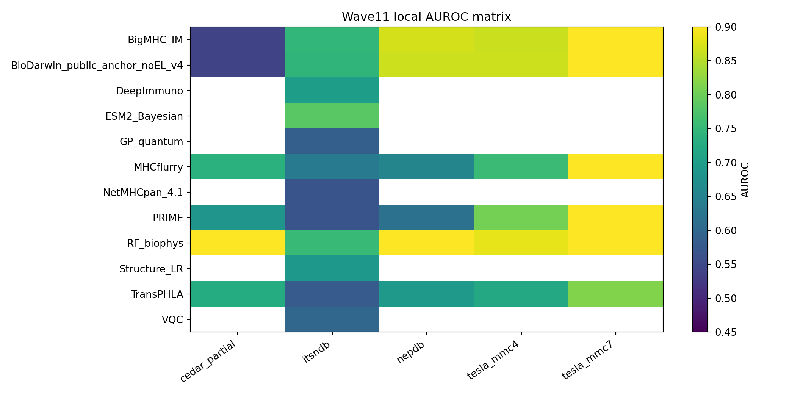
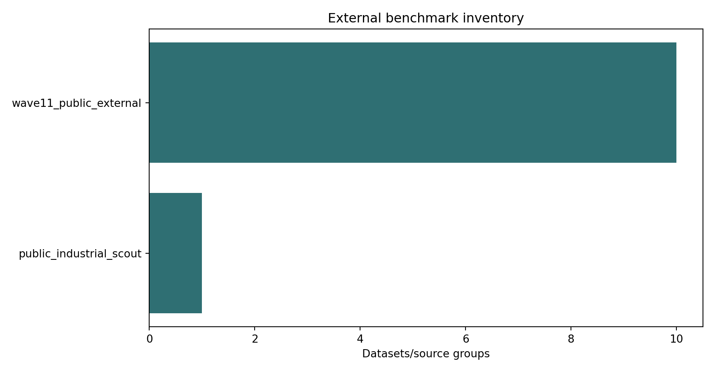

11-Algorithm Comparison
AUPRC/AUROC are the best locally evaluated row per algorithm, so every comparator has a numeric value where one exists.
| rank | algorithm | source_type | dataset_or_bundle | status | AUPRC | AUROC | note |
|---|---|---|---|---|---|---|---|
| 1 | ours · BioDarwin_mode_bank_v4 | biodarwin_mode_bank | academic_validation_like | gated_full_discovery | 0.8863 | 0.9724 | BioDarwin representative row; label intentionally marked ours. |
| 2 | RF_biophys | wave11_public_external | cedar_partial | local_prediction_file | 0.9967 | 0.9555 | Best local row for this algorithm. |
| 3 | MHCflurry | wave11_public_external | cedar_partial | local_prediction_file | 0.9728 | 0.7372 | Best local row for this algorithm. |
| 4 | PRIME | wave11_public_external | cedar_partial | local_prediction_file | 0.9677 | 0.6839 | Best local row for this algorithm. |
| 5 | TransPHLA | wave11_public_external | cedar_partial | local_prediction_file | 0.9648 | 0.7281 | Best local row for this algorithm. |
| 6 | BigMHC_IM | wave11_public_external | cedar_partial | local_prediction_file | 0.9548 | 0.5423 | Best local row for this algorithm. |
| 7 | ESM2_Bayesian | wave11_public_external | itsndb | local_prediction_file | 0.6912 | 0.7841 | Best local row for this algorithm. |
| 8 | Structure_LR | wave11_public_external | itsndb | local_prediction_file | 0.6182 | 0.6894 | Best local row for this algorithm. |
| 9 | DeepImmuno | wave11_public_external | itsndb | local_prediction_file | 0.6109 | 0.7019 | Best local row for this algorithm. |
| 10 | GP_quantum | wave11_public_external | itsndb | local_prediction_file | 0.5449 | 0.5870 | Best local row for this algorithm. |
| 11 | GA_public_feature_adapter | biodarwin_mode_bank | industrial_locked_v0 | clean_comparator | 0.5154 | 0.5903 | Best local row for this algorithm. |
Do not collapse these into one marketing number. Some rows are diagnostic, low-power, all-positive, or overlap-flagged. The strongest manuscript claim must use the reviewer-safer subset or new frozen prospective rows.



Best Per Dataset
| benchmark_family | dataset | algorithm | score_col | claim_status | locally_evaluated | diagnostic_after_failure | notes | n | n_pos | n_neg | positive_rate | binary_metric_possible | low_power | AUPRC | AUROC | top5_precision | top5_hits | top10_precision | top10_hits | top20_precision | top20_hits | top50_precision | top50_hits | top96_precision | top96_hits | training_overlap_fraction | overlap_warning | top24_precision | top24_hits |
|---|---|---|---|---|---|---|---|---|---|---|---|---|---|---|---|---|---|---|---|---|---|---|---|---|---|---|---|---|---|
| biodarwin_mode_bank | academic_validation_like | BioDarwin_PanVax_v2 | reported | clean_prefreeze_model | True | False | Mode-bank v4; industrial win diagnostic until frozen before new data. | 430 | 11 | 419 | 0.0256 | True | False | 0.8863 | 0.9724 | 1.0000 | 5 | 0.9000 | 9 | 0.1042 | 10 | False | 0.4167 | 10.0000 | |||||
| biodarwin_mode_bank | industrial_locked_v0 | BioDarwin_mode_bank_v4 | reported | diagnostic_mode_bank | True | True | Mode-bank v4; industrial win diagnostic until frozen before new data. | 25 | 9 | 16 | 0.3600 | True | True | 0.6280 | 0.6389 | 0.8000 | 4 | 0.5000 | 5 | 0.3600 | 9 | False | 0.3750 | 9.0000 | |||||
| wave11_public_external | cedar_partial | RF_biophys | score_rf_biophys | local_prediction_file | True | False | 909 | 851 | 58 | 0.9362 | True | False | 0.9967 | 0.9555 | 1.0000 | 5 | 1.0000 | 10 | 1.0000 | 20.0000 | 1.0000 | 50.0000 | 1.0000 | 96 | 1.0000 | True | |||
| wave11_public_external | itsndb | ESM2_Bayesian | score_esm2_bayesian | local_prediction_file | True | False | 311 | 130 | 181 | 0.4180 | True | False | 0.6912 | 0.7841 | 1.0000 | 5 | 0.7000 | 7 | 0.7500 | 15.0000 | 0.7400 | 37.0000 | 0.6875 | 66 | 0.5768 | True | |||
| wave11_public_external | nepdb | RF_biophys | score_rf_biophys | local_prediction_file | True | False | 572 | 151 | 421 | 0.2640 | True | False | 0.9300 | 0.9731 | 1.0000 | 5 | 1.0000 | 10 | 1.0000 | 20.0000 | 1.0000 | 50.0000 | 0.9375 | 90 | 1.0000 | True | |||
| wave11_public_external | tesla_mmc4 | RF_biophys | score_rf_biophys | local_prediction_file | True | False | 605 | 37 | 568 | 0.0612 | True | False | 0.3641 | 0.8839 | 0.4000 | 2 | 0.5000 | 5 | 0.4500 | 9.0000 | 0.3800 | 19.0000 | 0.2604 | 25 | 1.0000 | True | |||
| wave11_public_external | tesla_mmc7 | BigMHC_IM | score_bigmhc_im | local_prediction_file | True | False | 310 | 4 | 306 | 0.0129 | True | True | 0.5701 | 0.9918 | 0.6000 | 3 | 0.3000 | 3 | 0.2000 | 4.0000 | 0.0800 | 4.0000 | 0.0417 | 4 | 1.0000 | True |
Reviewer-Safer Best Per Dataset
| benchmark_family | dataset | algorithm | score_col | claim_status | locally_evaluated | diagnostic_after_failure | notes | n | n_pos | n_neg | positive_rate | binary_metric_possible | low_power | AUPRC | AUROC | top5_precision | top5_hits | top10_precision | top10_hits | top20_precision | top20_hits | top50_precision | top50_hits | top96_precision | top96_hits | training_overlap_fraction | overlap_warning | top24_precision | top24_hits |
|---|---|---|---|---|---|---|---|---|---|---|---|---|---|---|---|---|---|---|---|---|---|---|---|---|---|---|---|---|---|
| biodarwin_mode_bank | academic_validation_like | BioDarwin_mode_bank_v4 | reported | gated_full_discovery | True | False | Mode-bank v4; industrial win diagnostic until frozen before new data. | 430 | 11 | 419 | 0.0256 | True | False | 0.8863 | 0.9724 | 1.0000 | 5 | 0.9000 | 9 | 0.1042 | 10 | False | 0.4167 | 10.0000 | |||||
| wave11_public_external | cedar_partial | MHCflurry | score_mhcflurry | local_prediction_file | True | False | 845 | 787 | 58 | 0.9314 | True | False | 0.9728 | 0.7372 | 1.0000 | 5 | 1.0000 | 10 | 1.0000 | 20.0000 | 1.0000 | 50.0000 | 1.0000 | 96 | 0.0011 | False | |||
| wave11_public_external | itsndb | DeepImmuno | score_deepimmuno | local_prediction_file | True | False | 319 | 136 | 183 | 0.4263 | True | False | 0.6109 | 0.7019 | 0.8000 | 4 | 0.8000 | 8 | 0.7000 | 14.0000 | 0.5800 | 29.0000 | 0.6146 | 59 | 0.0063 | False | |||
| wave11_public_external | nepdb | PRIME | score_prime | local_prediction_file | True | False | 609 | 263 | 346 | 0.4319 | True | False | 0.5623 | 0.6198 | 0.8000 | 4 | 0.8000 | 8 | 0.7000 | 14.0000 | 0.5400 | 27.0000 | 0.5521 | 53 | 0.0000 | False | |||
| wave11_public_external | tesla_mmc4 | PRIME | score_prime | local_prediction_file | True | False | 605 | 37 | 568 | 0.0612 | True | False | 0.1937 | 0.8054 | 0.2000 | 1 | 0.2000 | 2 | 0.2000 | 4.0000 | 0.1600 | 8.0000 | 0.1875 | 18 | 0.0000 | False |
All Local Metrics
| benchmark_family | dataset | algorithm | score_col | claim_status | locally_evaluated | diagnostic_after_failure | notes | n | n_pos | n_neg | positive_rate | binary_metric_possible | low_power | AUPRC | AUROC | top5_precision | top5_hits | top10_precision | top10_hits | top20_precision | top20_hits | top50_precision | top50_hits | top96_precision | top96_hits | training_overlap_fraction | overlap_warning | top24_precision | top24_hits |
|---|---|---|---|---|---|---|---|---|---|---|---|---|---|---|---|---|---|---|---|---|---|---|---|---|---|---|---|---|---|
| biodarwin_mode_bank | academic_validation_like | BioDarwin_PanVax_v2 | reported | clean_prefreeze_model | True | False | Mode-bank v4; industrial win diagnostic until frozen before new data. | 430 | 11 | 419 | 0.0256 | True | False | 0.8863 | 0.9724 | 1.0000 | 5 | 0.9000 | 9 | 0.1042 | 10 | False | 0.4167 | 10.0000 | |||||
| biodarwin_mode_bank | academic_validation_like | BioDarwin_mode_bank_v4 | reported | gated_full_discovery | True | False | Mode-bank v4; industrial win diagnostic until frozen before new data. | 430 | 11 | 419 | 0.0256 | True | False | 0.8863 | 0.9724 | 1.0000 | 5 | 0.9000 | 9 | 0.1042 | 10 | False | 0.4167 | 10.0000 | |||||
| biodarwin_mode_bank | academic_validation_like | CROSS_claimsafe | reported | clean_comparator | True | False | Mode-bank v4; industrial win diagnostic until frozen before new data. | 430 | 11 | 419 | 0.0256 | True | False | 0.8465 | 0.9920 | 1.0000 | 5 | 0.8000 | 8 | 0.1146 | 11 | False | 0.4167 | 10.0000 | |||||
| biodarwin_mode_bank | academic_validation_like | BigMHC_IM | reported | clean_comparator | True | False | Mode-bank v4; industrial win diagnostic until frozen before new data. | 430 | 11 | 419 | 0.0256 | True | False | 0.3337 | 0.8277 | 0.6000 | 3 | 0.4000 | 4 | 0.0938 | 9 | False | 0.2500 | 6.0000 | |||||
| biodarwin_mode_bank | industrial_locked_v0 | BioDarwin_public_anchor_v3 | reported | diagnostic_selected_after_failure | True | True | Mode-bank v4; industrial win diagnostic until frozen before new data. | 25 | 9 | 16 | 0.3600 | True | True | 0.6280 | 0.6389 | 0.8000 | 4 | 0.5000 | 5 | 0.3600 | 9 | False | 0.3750 | 9.0000 | |||||
| biodarwin_mode_bank | industrial_locked_v0 | BioDarwin_mode_bank_v4 | reported | diagnostic_mode_bank | True | True | Mode-bank v4; industrial win diagnostic until frozen before new data. | 25 | 9 | 16 | 0.3600 | True | True | 0.6280 | 0.6389 | 0.8000 | 4 | 0.5000 | 5 | 0.3600 | 9 | False | 0.3750 | 9.0000 | |||||
| biodarwin_mode_bank | industrial_locked_v0 | BigMHC_IM | reported | clean_comparator | True | False | Mode-bank v4; industrial win diagnostic until frozen before new data. | 25 | 9 | 16 | 0.3600 | True | True | 0.5781 | 0.6111 | 0.8000 | 4 | 0.4000 | 4 | 0.3600 | 9 | False | 0.3750 | 9.0000 | |||||
| biodarwin_mode_bank | industrial_locked_v0 | GA_public_feature_adapter | reported | clean_comparator | True | False | Mode-bank v4; industrial win diagnostic until frozen before new data. | 25 | 9 | 16 | 0.3600 | True | True | 0.5154 | 0.5903 | 0.6000 | 3 | 0.4000 | 4 | 0.3600 | 9 | False | 0.3750 | 9.0000 | |||||
| biodarwin_mode_bank | industrial_locked_v0 | BioDarwin_PanVax_v2 | reported | clean_prefreeze_model | True | False | Mode-bank v4; industrial win diagnostic until frozen before new data. | 25 | 9 | 16 | 0.3600 | True | True | 0.4943 | 0.5417 | 0.6000 | 3 | 0.4000 | 4 | 0.3600 | 9 | False | 0.3750 | 9.0000 | |||||
| wave11_public_external | cedar_partial | RF_biophys | score_rf_biophys | local_prediction_file | True | False | 909 | 851 | 58 | 0.9362 | True | False | 0.9967 | 0.9555 | 1.0000 | 5 | 1.0000 | 10 | 1.0000 | 20.0000 | 1.0000 | 50.0000 | 1.0000 | 96 | 1.0000 | True | |||
| wave11_public_external | cedar_partial | MHCflurry | score_mhcflurry | local_prediction_file | True | False | 845 | 787 | 58 | 0.9314 | True | False | 0.9728 | 0.7372 | 1.0000 | 5 | 1.0000 | 10 | 1.0000 | 20.0000 | 1.0000 | 50.0000 | 1.0000 | 96 | 0.0011 | False | |||
| wave11_public_external | cedar_partial | PRIME | score_prime | local_prediction_file | True | False | 898 | 840 | 58 | 0.9354 | True | False | 0.9677 | 0.6839 | 1.0000 | 5 | 1.0000 | 10 | 1.0000 | 20.0000 | 0.9800 | 49.0000 | 0.9896 | 95 | 0.0011 | False | |||
| wave11_public_external | cedar_partial | TransPHLA | score_transphla | local_prediction_file | True | False | 736 | 678 | 58 | 0.9212 | True | False | 0.9648 | 0.7281 | 0.6000 | 3 | 0.8000 | 8 | 0.9000 | 18.0000 | 0.9200 | 46.0000 | 0.9479 | 91 | 0.0011 | False | |||
| wave11_public_external | cedar_partial | BigMHC_IM | score_bigmhc_im | local_prediction_file | True | False | 898 | 840 | 58 | 0.9354 | True | False | 0.9548 | 0.5423 | 1.0000 | 5 | 1.0000 | 10 | 1.0000 | 20.0000 | 1.0000 | 50.0000 | 0.9896 | 95 | 1.0000 | True | |||
| wave11_public_external | cedar_partial | BioDarwin_public_anchor_noEL_v4 | biodarwin_public_anchor_noEL_v4_score | diagnostic_public_anchor_noEL | True | True | Derived from mode-bank public-anchor concept; no industrial labels used here, but mode selected after TG4050 failure. | 898 | 840 | 58 | 0.9354 | True | False | 0.9548 | 0.5417 | 1.0000 | 5 | 1.0000 | 10 | 1.0000 | 20.0000 | 1.0000 | 50.0000 | 0.9896 | 95 | False | |||
| wave11_public_external | dbpepneo2_mhci | BigMHC_IM | score_bigmhc_im | local_prediction_file | True | False | 467 | 467 | 0 | 1.0000 | False | True | 1.0000 | 5 | 1.0000 | 10 | 1.0000 | 20.0000 | 1.0000 | 50.0000 | 1.0000 | 96 | 0.3084 | True | |||||
| wave11_public_external | dbpepneo2_mhci | MHCflurry | score_mhcflurry | local_prediction_file | True | False | 463 | 463 | 0 | 1.0000 | False | True | 1.0000 | 5 | 1.0000 | 10 | 1.0000 | 20.0000 | 1.0000 | 50.0000 | 1.0000 | 96 | 0.0043 | False | |||||
| wave11_public_external | dbpepneo2_mhci | PRIME | score_prime | local_prediction_file | True | False | 467 | 467 | 0 | 1.0000 | False | True | 1.0000 | 5 | 1.0000 | 10 | 1.0000 | 20.0000 | 1.0000 | 50.0000 | 1.0000 | 96 | 0.0043 | False | |||||
| wave11_public_external | dbpepneo2_mhci | RF_biophys | score_rf_biophys | local_prediction_file | True | False | 467 | 467 | 0 | 1.0000 | False | True | 1.0000 | 5 | 1.0000 | 10 | 1.0000 | 20.0000 | 1.0000 | 50.0000 | 1.0000 | 96 | 0.3041 | True | |||||
| wave11_public_external | dbpepneo2_mhci | TransPHLA | score_transphla | local_prediction_file | True | False | 457 | 457 | 0 | 1.0000 | False | True | 1.0000 | 5 | 1.0000 | 10 | 1.0000 | 20.0000 | 1.0000 | 50.0000 | 1.0000 | 96 | 0.0043 | False | |||||
| wave11_public_external | dbpepneo2_mhci | BioDarwin_public_anchor_noEL_v4 | biodarwin_public_anchor_noEL_v4_score | diagnostic_public_anchor_noEL | True | True | Derived from mode-bank public-anchor concept; no industrial labels used here, but mode selected after TG4050 failure. | 467 | 467 | 0 | 1.0000 | False | True | 1.0000 | 5 | 1.0000 | 10 | 1.0000 | 20.0000 | 1.0000 | 50.0000 | 1.0000 | 96 | False | |||||
| wave11_public_external | itsndb | ESM2_Bayesian | score_esm2_bayesian | local_prediction_file | True | False | 311 | 130 | 181 | 0.4180 | True | False | 0.6912 | 0.7841 | 1.0000 | 5 | 0.7000 | 7 | 0.7500 | 15.0000 | 0.7400 | 37.0000 | 0.6875 | 66 | 0.5768 | True | |||
| wave11_public_external | itsndb | RF_biophys | score_rf_biophys | local_prediction_file | True | False | 319 | 136 | 183 | 0.4263 | True | False | 0.6501 | 0.7531 | 0.8000 | 4 | 0.7000 | 7 | 0.7500 | 15.0000 | 0.7000 | 35.0000 | 0.6562 | 63 | 0.5768 | True | |||
| wave11_public_external | itsndb | BioDarwin_public_anchor_noEL_v4 | biodarwin_public_anchor_noEL_v4_score | diagnostic_public_anchor_noEL | True | True | Derived from mode-bank public-anchor concept; no industrial labels used here, but mode selected after TG4050 failure. | 319 | 136 | 183 | 0.4263 | True | False | 0.6311 | 0.7450 | 0.4000 | 2 | 0.5000 | 5 | 0.6000 | 12.0000 | 0.7200 | 36.0000 | 0.6771 | 65 | False | |||
| wave11_public_external | itsndb | BigMHC_IM | score_bigmhc_im | local_prediction_file | True | False | 319 | 136 | 183 | 0.4263 | True | False | 0.6284 | 0.7477 | 0.4000 | 2 | 0.5000 | 5 | 0.6000 | 12.0000 | 0.7400 | 37.0000 | 0.6875 | 66 | 0.5831 | True | |||
| wave11_public_external | itsndb | Structure_LR | score_structure_lr | local_prediction_file | True | False | 311 | 130 | 181 | 0.4180 | True | False | 0.6182 | 0.6894 | 1.0000 | 5 | 0.9000 | 9 | 0.8500 | 17.0000 | 0.6200 | 31.0000 | 0.5938 | 57 | 0.5768 | True | |||
| wave11_public_external | itsndb | DeepImmuno | score_deepimmuno | local_prediction_file | True | False | 319 | 136 | 183 | 0.4263 | True | False | 0.6109 | 0.7019 | 0.8000 | 4 | 0.8000 | 8 | 0.7000 | 14.0000 | 0.5800 | 29.0000 | 0.6146 | 59 | 0.0063 | False | |||
| wave11_public_external | itsndb | MHCflurry | score_mhcflurry | local_prediction_file | True | False | 319 | 136 | 183 | 0.4263 | True | False | 0.5883 | 0.6367 | 0.8000 | 4 | 0.8000 | 8 | 0.8000 | 16.0000 | 0.7000 | 35.0000 | 0.5938 | 57 | 0.0063 | False | |||
| wave11_public_external | itsndb | GP_quantum | score_gp_quantum | local_prediction_file | True | False | 319 | 136 | 183 | 0.4263 | True | False | 0.5449 | 0.5870 | 1.0000 | 5 | 0.9000 | 9 | 0.8000 | 16.0000 | 0.5400 | 27.0000 | 0.5417 | 52 | 0.5768 | True | |||
| wave11_public_external | itsndb | VQC | score_vqc | local_prediction_file | True | False | 319 | 136 | 183 | 0.4263 | True | False | 0.5073 | 0.5985 | 0.2000 | 1 | 0.5000 | 5 | 0.7000 | 14.0000 | 0.5600 | 28.0000 | 0.5000 | 48 | False | ||||
| wave11_public_external | itsndb | TransPHLA | score_transphla | local_prediction_file | True | False | 318 | 135 | 183 | 0.4245 | True | False | 0.4978 | 0.5797 | 0.6000 | 3 | 0.6000 | 6 | 0.6500 | 13.0000 | 0.6600 | 33.0000 | 0.6042 | 58 | 0.0063 | False | |||
| wave11_public_external | itsndb | NetMHCpan_4.1 | score_netmhcpan | local_prediction_file | True | False | 319 | 136 | 183 | 0.4263 | True | False | 0.4932 | 0.5669 | 0.6000 | 3 | 0.5000 | 5 | 0.5000 | 10.0000 | 0.5200 | 26.0000 | 0.5625 | 54 | 0.0063 | False | |||
| wave11_public_external | itsndb | PRIME | score_prime | local_prediction_file | True | False | 319 | 136 | 183 | 0.4263 | True | False | 0.4804 | 0.5673 | 0.2000 | 1 | 0.4000 | 4 | 0.6000 | 12.0000 | 0.4800 | 24.0000 | 0.4792 | 46 | 0.0063 | False | |||
| wave11_public_external | mcpas | BigMHC_IM | score_bigmhc_im | local_prediction_file | True | False | 82 | 82 | 0 | 1.0000 | False | True | 1.0000 | 5 | 1.0000 | 10 | 1.0000 | 20.0000 | 1.0000 | 50.0000 | 1.0000 | 82 | 0.7439 | True | |||||
| wave11_public_external | mcpas | MHCflurry | score_mhcflurry | local_prediction_file | True | False | 80 | 80 | 0 | 1.0000 | False | True | 1.0000 | 5 | 1.0000 | 10 | 1.0000 | 20.0000 | 1.0000 | 50.0000 | 1.0000 | 80 | 0.7439 | True | |||||
| wave11_public_external | mcpas | PRIME | score_prime | local_prediction_file | True | False | 80 | 80 | 0 | 1.0000 | False | True | 1.0000 | 5 | 1.0000 | 10 | 1.0000 | 20.0000 | 1.0000 | 50.0000 | 1.0000 | 80 | 0.7439 | True | |||||
| wave11_public_external | mcpas | RF_biophys | score_rf_biophys | local_prediction_file | True | False | 82 | 82 | 0 | 1.0000 | False | True | 1.0000 | 5 | 1.0000 | 10 | 1.0000 | 20.0000 | 1.0000 | 50.0000 | 1.0000 | 82 | 0.0000 | False | |||||
| wave11_public_external | mcpas | TransPHLA | score_transphla | local_prediction_file | True | False | 65 | 65 | 0 | 1.0000 | False | True | 1.0000 | 5 | 1.0000 | 10 | 1.0000 | 20.0000 | 1.0000 | 50.0000 | 1.0000 | 65 | 0.7439 | True | |||||
| wave11_public_external | mcpas | BioDarwin_public_anchor_noEL_v4 | biodarwin_public_anchor_noEL_v4_score | diagnostic_public_anchor_noEL | True | True | Derived from mode-bank public-anchor concept; no industrial labels used here, but mode selected after TG4050 failure. | 82 | 82 | 0 | 1.0000 | False | True | 1.0000 | 5 | 1.0000 | 10 | 1.0000 | 20.0000 | 1.0000 | 50.0000 | 1.0000 | 82 | False | |||||
| wave11_public_external | neodb | BigMHC_IM | score_bigmhc_im | local_prediction_file | True | False | 552 | 552 | 0 | 1.0000 | False | True | 1.0000 | 5 | 1.0000 | 10 | 1.0000 | 20.0000 | 1.0000 | 50.0000 | 1.0000 | 96 | 0.1504 | False | |||||
| wave11_public_external | neodb | MHCflurry | score_mhcflurry | local_prediction_file | True | False | 549 | 549 | 0 | 1.0000 | False | True | 1.0000 | 5 | 1.0000 | 10 | 1.0000 | 20.0000 | 1.0000 | 50.0000 | 1.0000 | 96 | 0.0236 | False | |||||
| wave11_public_external | neodb | PRIME | score_prime | local_prediction_file | True | False | 551 | 551 | 0 | 1.0000 | False | True | 1.0000 | 5 | 1.0000 | 10 | 1.0000 | 20.0000 | 1.0000 | 50.0000 | 1.0000 | 96 | 0.0236 | False | |||||
| wave11_public_external | neodb | RF_biophys | score_rf_biophys | local_prediction_file | True | False | 552 | 552 | 0 | 1.0000 | False | True | 1.0000 | 5 | 1.0000 | 10 | 1.0000 | 20.0000 | 1.0000 | 50.0000 | 1.0000 | 96 | 0.1268 | False | |||||
| wave11_public_external | neodb | TransPHLA | score_transphla | local_prediction_file | True | False | 534 | 534 | 0 | 1.0000 | False | True | 1.0000 | 5 | 1.0000 | 10 | 1.0000 | 20.0000 | 1.0000 | 50.0000 | 1.0000 | 96 | 0.0236 | False | |||||
| wave11_public_external | neodb | BioDarwin_public_anchor_noEL_v4 | biodarwin_public_anchor_noEL_v4_score | diagnostic_public_anchor_noEL | True | True | Derived from mode-bank public-anchor concept; no industrial labels used here, but mode selected after TG4050 failure. | 552 | 552 | 0 | 1.0000 | False | True | 1.0000 | 5 | 1.0000 | 10 | 1.0000 | 20.0000 | 1.0000 | 50.0000 | 1.0000 | 96 | False | |||||
| wave11_public_external | nepdb | RF_biophys | score_rf_biophys | local_prediction_file | True | False | 572 | 151 | 421 | 0.2640 | True | False | 0.9300 | 0.9731 | 1.0000 | 5 | 1.0000 | 10 | 1.0000 | 20.0000 | 1.0000 | 50.0000 | 0.9375 | 90 | 1.0000 | True | |||
| wave11_public_external | nepdb | BigMHC_IM | score_bigmhc_im | local_prediction_file | True | False | 498 | 151 | 347 | 0.3032 | True | False | 0.7712 | 0.8704 | 1.0000 | 5 | 0.9000 | 9 | 0.9500 | 19.0000 | 0.9000 | 45.0000 | 0.8021 | 77 | 1.0000 | True | |||
| wave11_public_external | nepdb | BioDarwin_public_anchor_noEL_v4 | biodarwin_public_anchor_noEL_v4_score | diagnostic_public_anchor_noEL | True | True | Derived from mode-bank public-anchor concept; no industrial labels used here, but mode selected after TG4050 failure. | 498 | 151 | 347 | 0.3032 | True | False | 0.7703 | 0.8659 | 1.0000 | 5 | 0.9000 | 9 | 0.9500 | 19.0000 | 0.9000 | 45.0000 | 0.8021 | 77 | False | |||
| wave11_public_external | nepdb | PRIME | score_prime | local_prediction_file | True | False | 609 | 263 | 346 | 0.4319 | True | False | 0.5623 | 0.6198 | 0.8000 | 4 | 0.8000 | 8 | 0.7000 | 14.0000 | 0.5400 | 27.0000 | 0.5521 | 53 | 0.0000 | False | |||
| wave11_public_external | nepdb | MHCflurry | score_mhcflurry | local_prediction_file | True | False | 413 | 151 | 262 | 0.3656 | True | False | 0.5434 | 0.6546 | 0.6000 | 3 | 0.7000 | 7 | 0.6000 | 12.0000 | 0.6600 | 33.0000 | 0.5938 | 57 | 0.0000 | False | |||
| wave11_public_external | nepdb | TransPHLA | score_transphla | local_prediction_file | True | False | 562 | 150 | 412 | 0.2669 | True | False | 0.4090 | 0.6941 | 0.0000 | 0 | 0.0000 | 0 | 0.0000 | 0.0000 | 0.5800 | 29.0000 | 0.5625 | 54 | 0.0000 | False | |||
| wave11_public_external | tesla_mmc4 | RF_biophys | score_rf_biophys | local_prediction_file | True | False | 605 | 37 | 568 | 0.0612 | True | False | 0.3641 | 0.8839 | 0.4000 | 2 | 0.5000 | 5 | 0.4500 | 9.0000 | 0.3800 | 19.0000 | 0.2604 | 25 | 1.0000 | True | |||
| wave11_public_external | tesla_mmc4 | BioDarwin_public_anchor_noEL_v4 | biodarwin_public_anchor_noEL_v4_score | diagnostic_public_anchor_noEL | True | True | Derived from mode-bank public-anchor concept; no industrial labels used here, but mode selected after TG4050 failure. | 605 | 37 | 568 | 0.0612 | True | False | 0.2970 | 0.8658 | 0.4000 | 2 | 0.4000 | 4 | 0.4000 | 8.0000 | 0.3200 | 16.0000 | 0.2188 | 21 | False | |||
| wave11_public_external | tesla_mmc4 | BigMHC_IM | score_bigmhc_im | local_prediction_file | True | False | 605 | 37 | 568 | 0.0612 | True | False | 0.2914 | 0.8642 | 0.4000 | 2 | 0.4000 | 4 | 0.3500 | 7.0000 | 0.3200 | 16.0000 | 0.2188 | 21 | 1.0000 | True | |||
| wave11_public_external | tesla_mmc4 | PRIME | score_prime | local_prediction_file | True | False | 605 | 37 | 568 | 0.0612 | True | False | 0.1937 | 0.8054 | 0.2000 | 1 | 0.2000 | 2 | 0.2000 | 4.0000 | 0.1600 | 8.0000 | 0.1875 | 18 | 0.0000 | False | |||
| wave11_public_external | tesla_mmc4 | MHCflurry | score_mhcflurry | local_prediction_file | True | False | 599 | 37 | 562 | 0.0618 | True | False | 0.1886 | 0.7564 | 0.2000 | 1 | 0.1000 | 1 | 0.2000 | 4.0000 | 0.2600 | 13.0000 | 0.1875 | 18 | 0.0000 | False | |||
| wave11_public_external | tesla_mmc4 | TransPHLA | score_transphla | local_prediction_file | True | False | 605 | 37 | 568 | 0.0612 | True | False | 0.1132 | 0.7221 | 0.0000 | 0 | 0.0000 | 0 | 0.0500 | 1.0000 | 0.1200 | 6.0000 | 0.1042 | 10 | 0.0000 | False | |||
| wave11_public_external | tesla_mmc7 | BigMHC_IM | score_bigmhc_im | local_prediction_file | True | False | 310 | 4 | 306 | 0.0129 | True | True | 0.5701 | 0.9918 | 0.6000 | 3 | 0.3000 | 3 | 0.2000 | 4.0000 | 0.0800 | 4.0000 | 0.0417 | 4 | 1.0000 | True | |||
| wave11_public_external | tesla_mmc7 | BioDarwin_public_anchor_noEL_v4 | biodarwin_public_anchor_noEL_v4_score | diagnostic_public_anchor_noEL | True | True | Derived from mode-bank public-anchor concept; no industrial labels used here, but mode selected after TG4050 failure. | 310 | 4 | 306 | 0.0129 | True | True | 0.5701 | 0.9918 | 0.6000 | 3 | 0.3000 | 3 | 0.2000 | 4.0000 | 0.0800 | 4.0000 | 0.0417 | 4 | False | |||
| wave11_public_external | tesla_mmc7 | RF_biophys | score_rf_biophys | local_prediction_file | True | False | 310 | 4 | 306 | 0.0129 | True | True | 0.3137 | 0.9477 | 0.4000 | 2 | 0.2000 | 2 | 0.1500 | 3.0000 | 0.0600 | 3.0000 | 0.0417 | 4 | 1.0000 | True | |||
| wave11_public_external | tesla_mmc7 | PRIME | score_prime | local_prediction_file | True | False | 310 | 4 | 306 | 0.0129 | True | True | 0.2222 | 0.9011 | 0.2000 | 1 | 0.2000 | 2 | 0.1000 | 2.0000 | 0.0600 | 3.0000 | 0.0417 | 4 | 0.0000 | False | |||
| wave11_public_external | tesla_mmc7 | MHCflurry | score_mhcflurry | local_prediction_file | True | False | 310 | 4 | 306 | 0.0129 | True | True | 0.2141 | 0.9665 | 0.0000 | 0 | 0.2000 | 2 | 0.1500 | 3.0000 | 0.0800 | 4.0000 | 0.0417 | 4 | 0.0000 | False | |||
| wave11_public_external | tesla_mmc7 | TransPHLA | score_transphla | local_prediction_file | True | False | 310 | 4 | 306 | 0.0129 | True | True | 0.0362 | 0.8150 | 0.0000 | 0 | 0.0000 | 0 | 0.0000 | 0.0000 | 0.0200 | 1.0000 | 0.0312 | 3 | 0.0000 | False |
Source Inventory
| benchmark_family | dataset | source | validation_type | n | n_pos | n_with_hla | n_8_15 | status |
|---|---|---|---|---|---|---|---|---|
| wave11_public_external | improve_cedar | IMPROVE_Neoepitopes_CEDAR_benchmark_data | EXTERNAL_TEST | 282 | 0.0000 | 0 | 0 | ok |
| wave11_public_external | nepdb | NEPdb | HELD_OUT | 15243 | 163.0000 | 11873 | 572 | ok |
| wave11_public_external | tesla_mmc4 | TESLA_mmc4 | EXTERNAL_TEST | 605 | 37.0000 | 605 | 605 | ok |
| wave11_public_external | tesla_mmc7 | TESLA_mmc7_validation | EXTERNAL_TEST | 310 | 4.0000 | 310 | 310 | ok |
| wave11_public_external | neoranking_gartner | NeoRanking_Gartner_nmers_ranking | EXTERNAL_TEST | 0 | 0.0000 | 0 | 0 | missing_in_master |
| wave11_public_external | neodb | Neodb | UNKNOWN | 705 | 705.0000 | 559 | 552 | ok |
| wave11_public_external | mcpas | McPAS-TCR | UNKNOWN | 415 | 415.0000 | 83 | 82 | ok |
| wave11_public_external | cedar_partial | CEDAR | PARTIAL_OVERLAP | 4802 | 4663.0000 | 942 | 909 | ok |
| wave11_public_external | tsnadb_validated | TSNAdb_validated | HELD_OUT | 0 | 0.0000 | 0 | 0 | missing_in_master |
| wave11_public_external | dbpepneo2_mhci | dbPepNeo2_MHCI | HELD_OUT | 470 | 470.0000 | 470 | 467 | ok |
| public_industrial_scout | industrial_patent_company_poster_scout | 59 public sources / 19 org families | LOCKED_PUBLIC_INDUSTRIAL_SCOUT | 26323 | 12177 | 11511 | locked_metric_classI=25; locked_metric_classII=0 |
Current Competitor Landscape
| method | year | type | local_status | local_score_files | primary_source | code_or_server | notes |
|---|---|---|---|---|---|---|---|
| BigMHC | 2023 | MHC-I presentation + immunogenicity transfer learning | evaluated_locally | wave11 BigMHC_IM; BioDarwin industrial comparator | https://www.nature.com/articles/s42256-023-00694-6 | https://github.com/KarchinLab/bigmhc | Strong public comparator; industrial TG4050 mini-set baseline to beat. |
| NetMHCpan-4.1 / NetMHCIIpan | 2020 | MHC-I/MHC-II binding and eluted ligand prediction | partial_local_ITSNdb_only | wave11 NetMHCpan_4.1__itsndb; prior Class-II runs | https://academic.oup.com/nar/article/48/W1/W449/5837056 | https://services.healthtech.dtu.dk/services/NetMHCpan-4.1/ | Class-II server/predictor is important for next CD4-helper benchmark. |
| MHCflurry 2.0 | 2020 | MHC-I binding, antigen processing, presentation | evaluated_locally | wave11 MHCflurry across CEDAR/dbPepNeo2/ITSNdb/McPAS/NeoDB/NEPdb/TESLA | https://doi.org/10.1016/j.cels.2020.06.010 | https://openvax.github.io/mhcflurry/ | Best clean external AUROC on several wave11 bundles. |
| PRIME / PRIME2.0 | 2021 | presentation + peptide-intrinsic TCR recognition propensity | evaluated_locally | wave11 PRIME across multiple bundles | https://www.sciencedirect.com/science/article/pii/S2666379121000057 | http://prime.gfellerlab.org/ | Useful immunogenicity comparator; local rows available. |
| TransPHLA | 2022 | Transformer peptide-HLA binding predictor | evaluated_locally | wave11 TransPHLA across multiple bundles | https://www.nature.com/articles/s42256-022-00459-7 | https://github.com/a96123155/TransPHLA-AOMP | Binding-oriented; some local scores saturate near 1.0 and require calibration caution. |
| DeepImmuno | 2021 | deep immunogenicity predictor | ITSNdb_local | wave11 DeepImmuno__itsndb | https://github.com/frankligy/DeepImmuno | https://github.com/frankligy/DeepImmuno | Included in local and literature comparisons. |
| IMPROVE | 2024 | feature model for neoepitope immunogenicity validation | dataset_manifest_only | wave11 improve_cedar bundle has no positives in current manifest | https://pubmed.ncbi.nlm.nih.gov/38633261/ | Useful benchmark/source; current local extract needs label reconstruction before metrics. | |
| MUNIS | 2024 | deep learning HLA-I presented CD8 epitope model | not_yet_local | https://www.nature.com/articles/s42256-024-00971-y | Presentation/epitope competitor to add if code/model access is available. | ||
| NeoTImmuML | 2025 | weighted ensemble immunogenicity ML | not_yet_local | https://pmc.ncbi.nlm.nih.gov/articles/PMC12585993/ | Recent 2025 immunogenicity model; compare as literature/implementation target. | ||
| PHLA | 2025 | pretrained model incorporating HLA-peptide binding and immunogenicity | not_yet_local | https://www.sciencedirect.com/science/article/abs/pii/S0925231225019642 | Recent 2025 method; needs install/source availability check. | ||
| weakly supervised peptide-TCR model | 2025 | patient/TCR-aware neoantigen identification | not_yet_local | https://www.sciencedirect.com/science/article/pii/S2405471225002364 | TCR-profile mode is relevant to future BioDarwin patient-specific mode. | ||
| NeoPrecis-Immuno | 2026 | qualified immunogenicity + clonality-aware neoantigen landscape | not_yet_local | https://www.nature.com/articles/s41467-026-68651-6 | Current high-level comparator concept; may be response-prediction rather than peptide-only benchmark. |
CleanNeo/BarNeo Top Local Leaderboard
| benchmark_family | method_name | method_family | method_role | uses_public_pretraining | training_overlap_audited | clean_comparator_allowed | mean_AUPRC | median_AUPRC | mean_AUROC | mean_top10_precision | mean_top20_precision | mean_ECE | mean_Brier | mean_abstention_rate | n_split_rows | n_total_scored | reviewer_safe_score |
|---|---|---|---|---|---|---|---|---|---|---|---|---|---|---|---|---|---|
| clean_neobench_leaderboard | source_balanced_rf_train_prior_calibrated | classical_biophysical | internal_candidate | False | True | True | 0.8018 | 0.9454 | 0.8684 | 0.7887 | 0.7446 | 0.1185 | 0.0884 | 0.9162 | 70 | 5305 | 0.9677 |
| clean_neobench_leaderboard | pu_weighted_rf_train_prior_calibrated | classical_biophysical | internal_candidate | False | True | True | 0.7856 | 0.9283 | 0.8273 | 0.7787 | 0.7446 | 0.1299 | 0.0938 | 0.9162 | 70 | 5305 | 0.9484 |
| clean_neobench_leaderboard | source_balanced_plus_pu_rf_train_prior_calibrated | classical_biophysical | internal_candidate | False | True | True | 0.7836 | 0.9354 | 0.8428 | 0.7801 | 0.7461 | 0.1274 | 0.0925 | 0.9162 | 70 | 5305 | 0.9468 |
| clean_neobench_leaderboard | W7A_full | classical_biophysical | internal_candidate | False | True | True | 0.7105 | 0.6657 | 0.7604 | 0.8177 | 0.7829 | 0.2583 | 0.2312 | 0.7308 | 32 | 886 | 0.8682 |
| clean_neobench_leaderboard | W7A_QK_only | qk_fallback | bounded_fallback | False | True | True | 0.7186 | 0.7048 | 0.7431 | 0.8021 | 0.7892 | 0.2502 | 0.2273 | 0.7308 | 32 | 886 | 0.8540 |
| clean_neobench_leaderboard | W7B_stacked | ensemble_or_fusion | internal_candidate | False | True | True | 0.6905 | 0.6429 | 0.7218 | 0.8083 | 0.7798 | 0.2251 | 0.2149 | 0.7308 | 32 | 886 | 0.8497 |
| clean_neobench_leaderboard | Structure_LR | structure_proxy | anchor | False | True | True | 0.6624 | 0.6055 | 0.7420 | 0.7900 | 0.7353 | 0.1574 | 0.1910 | 0.6566 | 30 | 1213 | 0.8446 |
| clean_neobench_leaderboard | sourceheld_counterfactual_rf | internal_baseline | internal_candidate | False | True | True | 0.6960 | 0.8767 | 0.7527 | 0.7601 | 0.7211 | 0.2653 | 0.1740 | 0.9162 | 70 | 5305 | 0.8415 |
| clean_neobench_leaderboard | hard_decoy_sequence_only_source_stress | classical_biophysical | internal_candidate | False | True | True | 0.6816 | 0.8196 | 0.8167 | 0.7287 | 0.7032 | 0.2342 | 0.1658 | 0.9162 | 70 | 5305 | 0.8239 |
| clean_neobench_leaderboard | Stack_LR_inmaster_E3a | ensemble_or_fusion | internal_candidate | False | True | True | 0.6558 | 0.7306 | 0.7434 | 0.7958 | 0.7735 | 0.2344 | 0.2231 | 0.7308 | 32 | 886 | 0.8115 |
| clean_neobench_leaderboard | Stack_mean_E1 | ensemble_or_fusion | internal_candidate | False | True | True | 0.6547 | 0.6812 | 0.7118 | 0.7927 | 0.7829 | 0.2193 | 0.2346 | 0.7308 | 32 | 886 | 0.8113 |
| clean_neobench_leaderboard | D_positive_class_reweighting | classical_biophysical | internal_candidate | False | True | True | 0.6611 | 0.8104 | 0.7122 | 0.7430 | 0.7082 | 0.2172 | 0.1684 | 0.9162 | 70 | 5305 | 0.8080 |
| clean_neobench_leaderboard | anchor_rf_retrained_cf | internal_baseline | anchor | False | True | True | 0.6339 | 0.7436 | 0.7434 | 0.7444 | 0.7039 | 0.2757 | 0.2090 | 0.9162 | 70 | 5305 | 0.7952 |
| clean_neobench_leaderboard | decoy_focal_positive_pattern | classical_biophysical | internal_candidate | False | True | True | 0.6449 | 0.7222 | 0.7461 | 0.6876 | 0.6859 | 0.2667 | 0.2098 | 0.8543 | 72 | 7008 | 0.7758 |
| clean_neobench_leaderboard | anchor_rf | internal_baseline | anchor | False | True | True | 0.6145 | 0.6929 | 0.6890 | 0.7098 | 0.6789 | 0.2820 | 0.2096 | 0.8543 | 72 | 7008 | 0.7683 |
| clean_neobench_leaderboard | Stack_median_E2 | ensemble_or_fusion | internal_candidate | False | True | True | 0.6130 | 0.6086 | 0.6503 | 0.7771 | 0.7735 | 0.2122 | 0.2422 | 0.7308 | 32 | 886 | 0.7672 |
| clean_neobench_leaderboard | kNN | classical_biophysical | internal_candidate | False | True | True | 0.6105 | 0.6008 | 0.6622 | 0.7958 | 0.7813 | 0.2317 | 0.2477 | 0.7308 | 32 | 886 | 0.7665 |
| clean_neobench_leaderboard | pu_weighted_rf | classical_biophysical | internal_candidate | False | True | True | 0.6171 | 0.7345 | 0.6756 | 0.7472 | 0.7111 | 0.2607 | 0.1982 | 0.9162 | 70 | 5305 | 0.7605 |
| clean_neobench_leaderboard | E_pu_style_conservative_ranker | classical_biophysical | internal_candidate | False | True | True | 0.6141 | 0.7398 | 0.7213 | 0.7344 | 0.7075 | 0.2792 | 0.2155 | 0.9162 | 70 | 5305 | 0.7530 |
| clean_neobench_leaderboard | MultiTask_A_only | classical_biophysical | internal_candidate | False | True | True | 0.5977 | 0.5056 | 0.6123 | 0.7956 | 0.7556 | 0.2551 | 0.2540 | 0.7124 | 30 | 866 | 0.7513 |
| clean_neobench_leaderboard | sourceheld_prespecified_late_fusion_w0.5 | ensemble_or_fusion | internal_candidate | False | True | True | 0.6006 | 0.6489 | 0.6724 | 0.7458 | 0.7153 | 0.2654 | 0.2144 | 0.9162 | 70 | 5305 | 0.7432 |
| clean_neobench_leaderboard | source_balanced_rf | classical_biophysical | internal_candidate | False | True | True | 0.6051 | 0.7095 | 0.7167 | 0.7130 | 0.6846 | 0.2664 | 0.2086 | 0.9162 | 70 | 5305 | 0.7410 |
| clean_neobench_leaderboard | MultiTask_AC | classical_biophysical | internal_candidate | False | True | True | 0.5872 | 0.5050 | 0.6077 | 0.7756 | 0.7506 | 0.2641 | 0.2635 | 0.7124 | 30 | 866 | 0.7359 |
| clean_neobench_leaderboard | Wave8_TCR_SelfSim_no_exact | tcr_aware | internal_candidate | False | True | True | 0.5640 | 0.5582 | 0.6118 | 0.8219 | 0.7790 | 0.1485 | 0.2083 | 0.6786 | 32 | 1233 | 0.7335 |
| clean_neobench_leaderboard | MultiTask_AD | classical_biophysical | internal_candidate | False | True | True | 0.5797 | 0.4962 | 0.5924 | 0.7689 | 0.7422 | 0.2566 | 0.2580 | 0.7124 | 30 | 866 | 0.7278 |
| clean_neobench_leaderboard | MultiTask_AB | classical_biophysical | internal_candidate | False | True | True | 0.5836 | 0.5167 | 0.5961 | 0.7556 | 0.7522 | 0.2876 | 0.2632 | 0.7124 | 30 | 866 | 0.7259 |
| clean_neobench_leaderboard | MultiTask_full | classical_biophysical | internal_candidate | False | True | True | 0.5773 | 0.5161 | 0.5831 | 0.7722 | 0.7522 | 0.2737 | 0.2704 | 0.7124 | 30 | 866 | 0.7244 |
| clean_neobench_leaderboard | GP_quantum | qk_fallback | bounded_fallback | False | True | True | 0.5946 | 0.5659 | 0.5936 | 0.7677 | 0.7657 | 0.2394 | 0.2416 | 0.7308 | 32 | 886 | 0.7242 |
| clean_neobench_leaderboard | RF_biophys | internal_baseline | internal_candidate | False | True | True | 0.5706 | 0.4934 | 0.5793 | 0.7771 | 0.7735 | 0.2498 | 0.2538 | 0.7308 | 32 | 886 | 0.7210 |
| clean_neobench_leaderboard | G_abstention_extreme_ood | classical_biophysical | internal_candidate | False | True | True | 0.5730 | 0.6495 | 0.6290 | 0.7287 | 0.7032 | 0.2815 | 0.2401 | 0.9162 | 70 | 5305 | 0.7106 |
| clean_neobench_leaderboard | source_prespecified_rf_qk_compact_w0.5 | qk_fallback | bounded_fallback | False | True | True | 0.5815 | 0.6802 | 0.6353 | 0.7430 | 0.7118 | 0.2585 | 0.2124 | 0.9162 | 70 | 5305 | 0.7042 |
| clean_neobench_leaderboard | VQC | qk_fallback | bounded_fallback | False | True | True | 0.5579 | 0.5576 | 0.5905 | 0.7833 | 0.7751 | 0.1896 | 0.2322 | 0.7308 | 32 | 886 | 0.6956 |
| clean_neobench_leaderboard | H_anchor_rf_plus_qk_compact_w0.5 | qk_fallback | bounded_fallback | False | True | True | 0.5687 | 0.6667 | 0.6251 | 0.7330 | 0.7039 | 0.2846 | 0.2305 | 0.9162 | 70 | 5305 | 0.6869 |
| clean_neobench_leaderboard | Wave8_SelfSim_no_exact | tcr_aware | internal_candidate | False | True | True | 0.5252 | 0.5061 | 0.5789 | 0.7708 | 0.7532 | 0.1606 | 0.2297 | 0.7308 | 32 | 886 | 0.6833 |
| clean_neobench_leaderboard | Wave8_TCR_motif_only | tcr_aware | internal_candidate | False | True | True | 0.5201 | 0.5402 | 0.6022 | 0.7812 | 0.7837 | 0.1382 | 0.2214 | 0.6786 | 32 | 1233 | 0.6826 |
| clean_neobench_leaderboard | BigMHC_IM | deep_immunogenicity | caveated_public_comparator | True | False | False | 0.6217 | 0.6139 | 0.7482 | 0.7719 | 0.7353 | 0.2034 | 0.2050 | 0.6786 | 32 | 1233 | 0.6758 |
| clean_neobench_leaderboard | TENT | classical_biophysical | internal_candidate | False | True | True | 0.5351 | 0.5030 | 0.5456 | 0.7356 | 0.7422 | 0.2685 | 0.2784 | 0.7124 | 30 | 866 | 0.6754 |
| clean_neobench_leaderboard | prespecified_lr_qk_quantum_only_w0.5 | qk_fallback | bounded_fallback | False | True | True | 0.5698 | 0.5527 | 0.7218 | 0.6209 | 0.5503 | 0.2220 | 0.2228 | 0.0000 | 17 | 1703 | 0.6718 |
| clean_neobench_leaderboard | anchor_lr | internal_baseline | anchor | False | True | True | 0.5262 | 0.4983 | 0.6217 | 0.6033 | 0.5180 | 0.1775 | 0.2204 | 0.0000 | 17 | 1703 | 0.6691 |
| clean_neobench_leaderboard | MHCflurry | deep_immunogenicity | caveated_public_comparator | True | False | False | 0.6009 | 0.5866 | 0.6444 | 0.8187 | 0.7728 | 0.1559 | 0.2112 | 0.6786 | 32 | 1233 | 0.6690 |